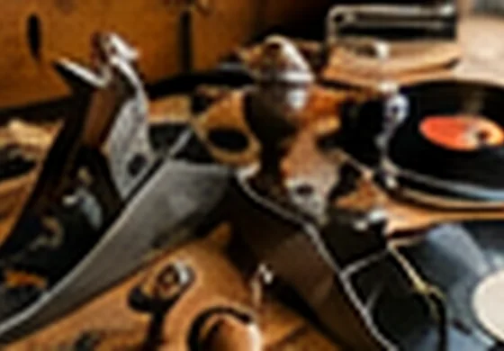
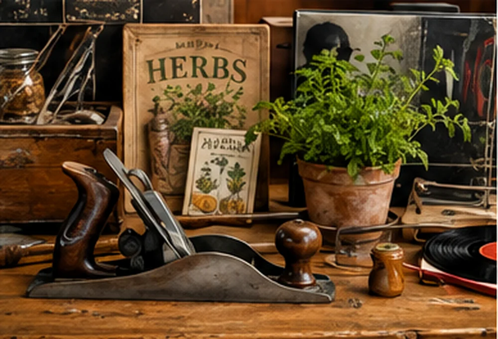
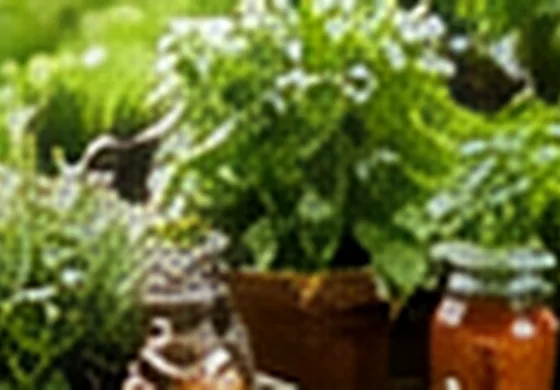
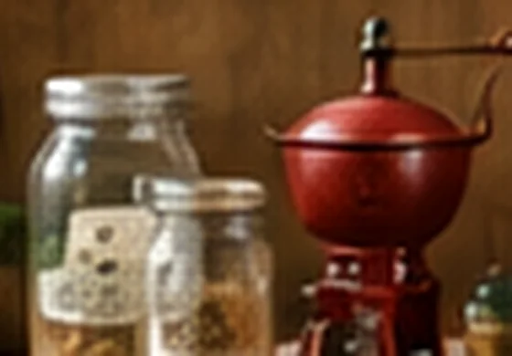
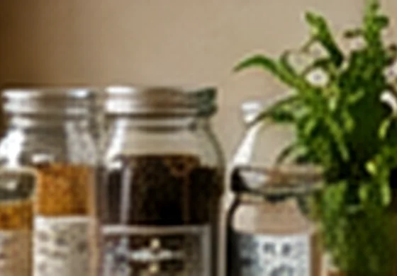
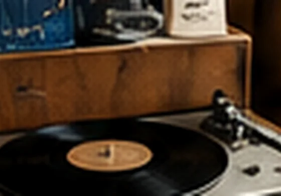
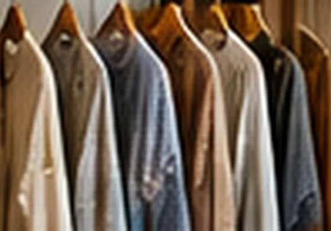
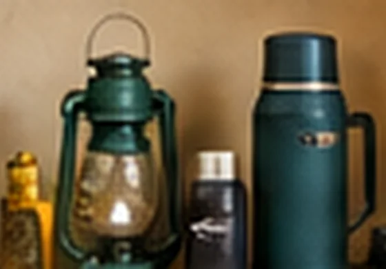
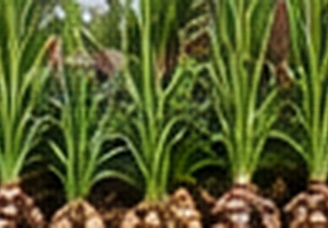
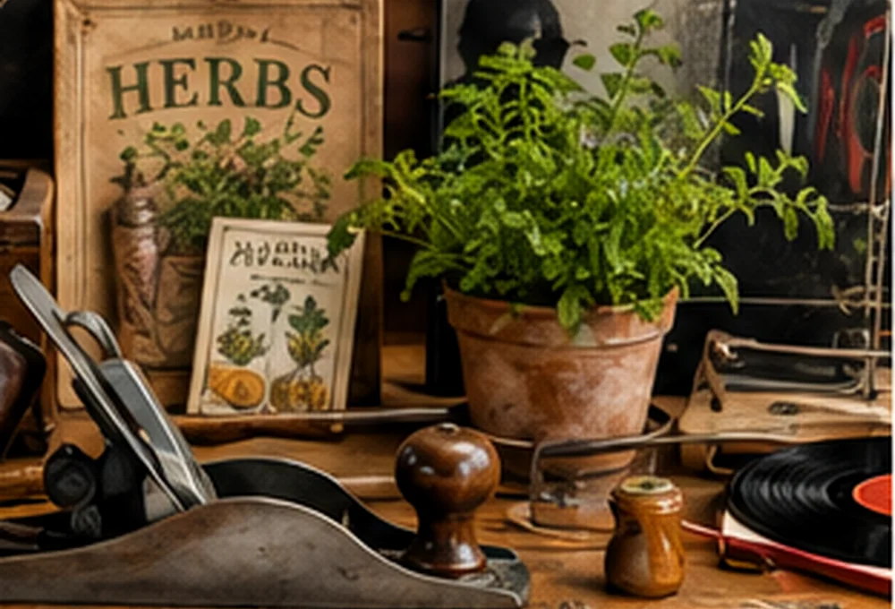

01 / Repair
Hand tools that last
Thoughtfully sourced, functional tools made to be maintained instead of discarded.
Examples: hand planes, hand drills, chisels, hand saws and sharpening stones.
A small collection with a bigger idea: buy less, own better, repair what you can, grow something useful and keep the things you love.
Not a collection of random antiques. An invitation to recover practical independence, one object and one skill at a time.

Every category is selected with a practical question in mind: what dependency can this item help someone reduce?
Showing 8 categories

Thoughtfully sourced, functional tools made to be maintained instead of discarded.

Plants and supplies that help bring some of the garden into everyday life.

Durable kitchenware and traditional tools for preparing, storing and preserving food.

Locally grown and small-batch botanical goods where permitted, labeled and ready.

Enjoy music you can hold onto, without needing an ongoing subscription.

Wearable pieces chosen for longevity and honest materials rather than quick turnover.

Small, practical supplies for unexpected disruptions and ordinary preparedness.

Distinctive seasonal plants and flowers when production and venue rules allow.

A well-made old tool is also a vote for repair. A potted herb is a small step toward growing. A record is music you own.
We want the booth to be memorable not because it sells everything, but because each object has a place in a coherent idea: less waste, more capability and things worth keeping.